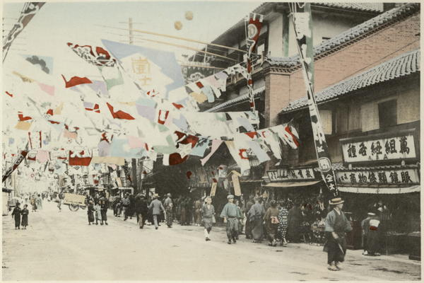

“Dotombori—a popular amusement quarter in Osaka”
Sights and Scenes in Fair Japan (1910)
Osaka is a large city (476,000 inhabitants) on the sea-coast, and only an hour and a half’s railway journey from Kyoto. It is the Liverpool of Japan—more useful, therefore, than ornamental in appearance; but its long rows of merchants’ offices and shops are redeemed from monotony by the numerous canals, crossed by a number of fine bridges, which intersect every part of the city.
Japan As We Saw It (Bickersteth) (1893)
Osaka, with a population of nearly half a million, is the second city in the empire, and whilst being the Manchester of Japan, is at the same time an ancient city, and first came into prominence in the sixteenth century, when Hideyoshi, who has been called the Napoleon of Japan, made it his fortress and capital.
Rambles in Japan (1895)
The Dutch describe Ohosaka as a more attractive resort than even Yedo. While this latter city may be regarded as the London of Japan, Ohosaka seems to be its Paris. Here are the most celebrated theatres, the most sumptuous tea-houses, the most extensive pleasure-gardens. It is the abode of luxury and wealth, the favourite resort of fashionable Japanese, who come here to spend their time in gaiety and pleasure. Ohosaka is one of the five imperial cities, and contains a vast population. It is situated on the left bank of the Jedogawa, a stream which rises in the Lake of Oity, situated a day and a half’s journey in the interior. It is navigable for boats of large tonnage as far as Miaco, and is spanned by numerous handsome bridges.
Narrative of the Earl of Elgin’s Mission to China and Japan (1859)
Osaca comes next of Japanese cities to Yedo in size and importance, and contains a population which has been variously estimated at from 300,000 to 750,000; probably half a million would not be far from the true figures. It has been not inaptly called the Venice of Japan, for it is intersected by a number of branches of the river Yodo-gawa, which flows down from above Kioto, and these form, as do the canals in Venice, important highways. They are, however, broader and cleaner than the drain-like channels (the Grand Canal excepted) which run through the European city; and the sampans which ply on them being all made of unvarnished pine-wood, and floored with neat mats, are, to our eyes, more inviting, and scarcely less shapely, than the gloomy-looking gondolas of the Queen of the Adriatic. On the other hand, the latter need never fear that her architectural beauties are rivalled by any Osaca buildings, for the houses which line the river banks here are nearly all of wood and plaster, and though picturesque in their gables and their balconies, look poor and unsubstantial. ...
The streets of Osaca, like those of any large Japanese town, are daily witnesses of sights very similar, and yet very dissimilar, to those which we may see in many European towns. That there is in Japan a complete social system is evident from the existence there of many of the ‘hangers-on’ to society, which can only exist in a civilised country.
As we casually turn the corner of a street we come upon the sound of music, and a few yards away see a man, his face half hidden by an immense plaited bamboo hat of the shape of an upturned bowl, playing on a guitar, while his wife or daughter standing by accompanies his music with her voice.
In another street we find a small crowd of natives collected round a strolling juggler, who is spinning a number of tops in some wonderfully abstruse manner, or swallowing separately needles and a thread, and then reproducing the latter with the former strung upon it.
In a little enclosure leading out of another street, we find a wrestling-match going on, wrestling being a very ancient sport in Japan, dating indeed from a period before our Christian era, and having once, it is said, decided the succession to the Imperial throne.
We may turn aside out of another street, and enter a Japanese version of a ‘Madame Tussaud’s’—an exhibition of life-size figures, made of wood, representing various scenes in ordinary Japanese life—‘wood-works’ in fact, instead of ‘wax-works.’ The figures are admirably modelled, the faces true to life, the postures natural, and the costumes equally so; and the tendency of all Japanese art to take a grotesque line, and excel in it too, is visible in the treatment of almost all the subjects. A barber at his work; a stage actor; a group of beggars; a pilgrimage to Fusi-yama: such are some of the subjects chosen, and nearly all are extremely well represented. ...
Turning up one of the broader streets in the city, we come to a shop that takes up as much street frontage as at least six ordinary shops. There is indeed no rich display of colours to catch the eye of the passer-by; merely a large expanse of floor, covered with the fine mats which form the invariable carpets in Japan, and backed by tiers upon tiers of shelves. But the attendants who are sitting on their heels on the aforesaid mats will soon, if we like, cover half the floor with a profusion of silks and crapes, plain and patterned, simple and embroidered; the pieces are all ticketed with fixed prices, and we can invest in some of the crapes for which Osaca is famous without any trouble of ‘haggling.’ We hardly need the evidence of a shop such as this to conclude that there is a fair amount of dressing and ‘style’ among the aristocracy of Japan.
Round the World in 1870 (1872)
Osaka is an hour and a half distant from Kobe by rail. This is the Chicago of Japan, being the greatest commercial and manufacturing center of the empire. Crowded streets and smoking chimneys indicate its great activity.
Around the World Via Siberia (1902)
The city is built on a plain, intersected with numerous rivers and canals, crossed by no fewer than 808 bridges, giving it the appearance somewhat of Venice. The houses are mostly one-storied, and of unpainted wood, and the streets are very long, while telegraph poles and wires are abundant, and the whole place is illumined by the electric light. The great sight is the castle, one of the strongest in the world, with enormous blocks of granite as large as those used in the pyramids, and brought from Nagasaki. Tickets giving permission to view the interior we obtained at the Foreign Office.
There are three moats filled with water, and from the donjon or keep a magnificent view of Ozaka was obtained, while we observed snow lying on the mountains in the distance. Some of the blocks of granite were 20 feet long, and 15 feet high. In the centre formerly stood the most magnificent palace in Japan, but it was burnt during the revolution of 1868. Truly if the Japanese are small in stature, their ideas were great, for this powerful and inaccessible castle is raised stone upon stone from a level plain, and possesses no advantage in natural site, as Heidelberg, Ehrenbreitstein, or Gibraltar.
Impressions of a Journey Round the World (1897)
We spent the next morning in some visits to a few of the most famous temples in Kyoto. One of the largest, called Kyomizudera, is built on the hill near Yaami’s Hotel, and from its wooden platform, used for sacred dances, we had another fine view of the city, and could even see the smoke of Osaka, some forty miles away, in the extreme distance.
Japan As We Saw It (Bickersteth) (1893)
◀ NikkoSeto Inland Sea ▶